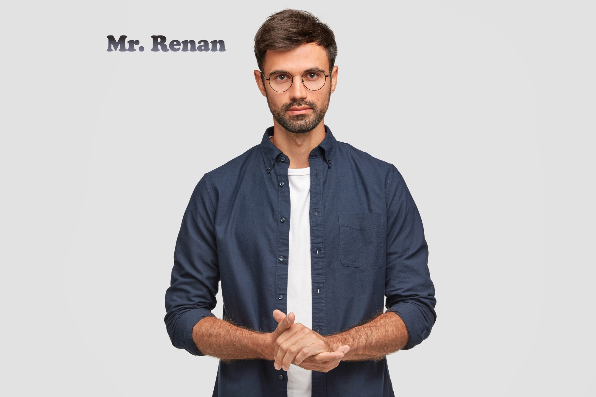
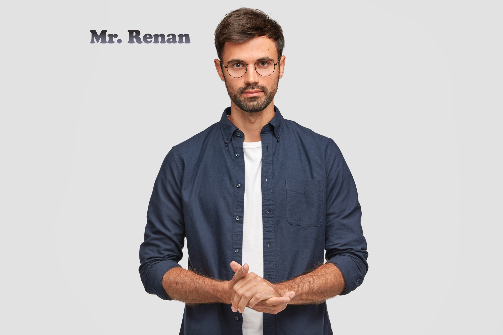

Origem da I-Design
A i-design nasceu em 2012, unindo o olhar técnico de Kayky o "Conquistador" com a sensibilidade estética de Kayky o "Lindo". Desde o início, nosso foco foi claro: transformar espaços em soluções arquitetônicas que comunicam, organizam e inspiram.
 
